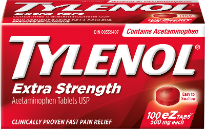
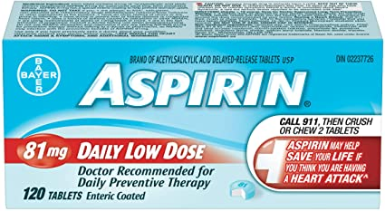
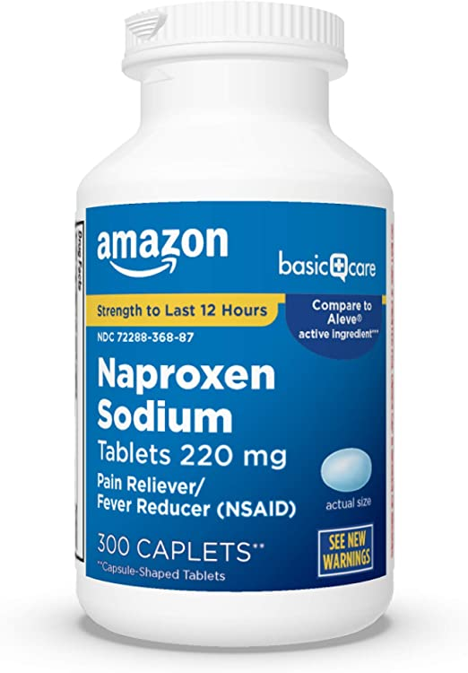

HEALTHY LIFE!
FOR YOUR HEALTH
HOME
DISEASES
MEDICINE
CHECK
DISEASES NAME:
TYLENOL
- It has few side effects among existing painkiller, so anyone can use it safely.
- It is also effective for fever, so it is also used as the main ingredient for most cold medicines.
- But never drink too much because of the strain on the liver.
ASPIRIN
- Aspirin is used in many ways because it has pain and anti-inflammatory effects.
- People with a bad stomach should not take it because it stimulates the digestive system.
NAPROXEN
-It absorbs directly from the top, so the efficacy is within an hour.
- Excessive use can cause heartburn.
-You should pay more attention to overdose as the effects of the drug are fast.


